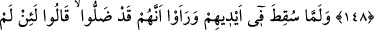
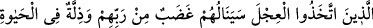

İSRÂİLOĞULLARI’NIN
BUZAĞIYA TAPMASI
148. (Tûr’a giden) Musa’nın arkasından kavmi, ziynet takımlarından,
böğürebilen bir buzağı heykelini (tanrı) edindiler. Görmediler mi ki o, onlarla ne
konuşuyor ne de onlara yol gösteriyor? Onu (tanrı olarak) benimsediler ve zalimler